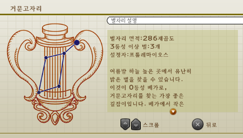
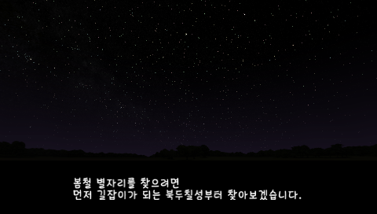

기기에 맞는 한글패치
PSP·PPSSPP 기본판과 Vita·Adrenaline 호환판.
같은 한국어 번역을 사용하는 두 가지 배포판입니다.
PSP·PPSSPP 기본판과 Vita·Adrenaline 호환판.
같은 한국어 번역을 사용하는 두 가지 배포판입니다.
처음 실행부터 날짜와 관측지 설정, 천체 사전과
시어터까지 실제 한글 화면으로 안내합니다.
플라네타리움 제작자 오히라 다카유키가 감수한 PSP용 천문 소프트웨어입니다. 날짜와 관측지를 바꾸어 하늘을 둘러보고, 천체를 검색해 설명을 읽거나 별자리 이야기를 감상할 수 있습니다.
이번 패치는 메뉴와 천체 사전, 시어터 자막, 이미지 속 글자와 게임 공유 수신 프로그램을 한국어로 옮겼습니다. 한글 폰트가 포함되어 있으며 음성은 일본어 원음입니다.
한국어로 옮긴 이야기 읽기 →
날짜·시간·관측지를 정하고, 별자리의 이름과 선을 표시해 보세요.

한글 초성으로 천체를 찾고, △로 사전을 열어 자세히 읽어 보세요.

계절별 별자리부터 우리은하까지, 스무 편의 이야기를 감상하세요.